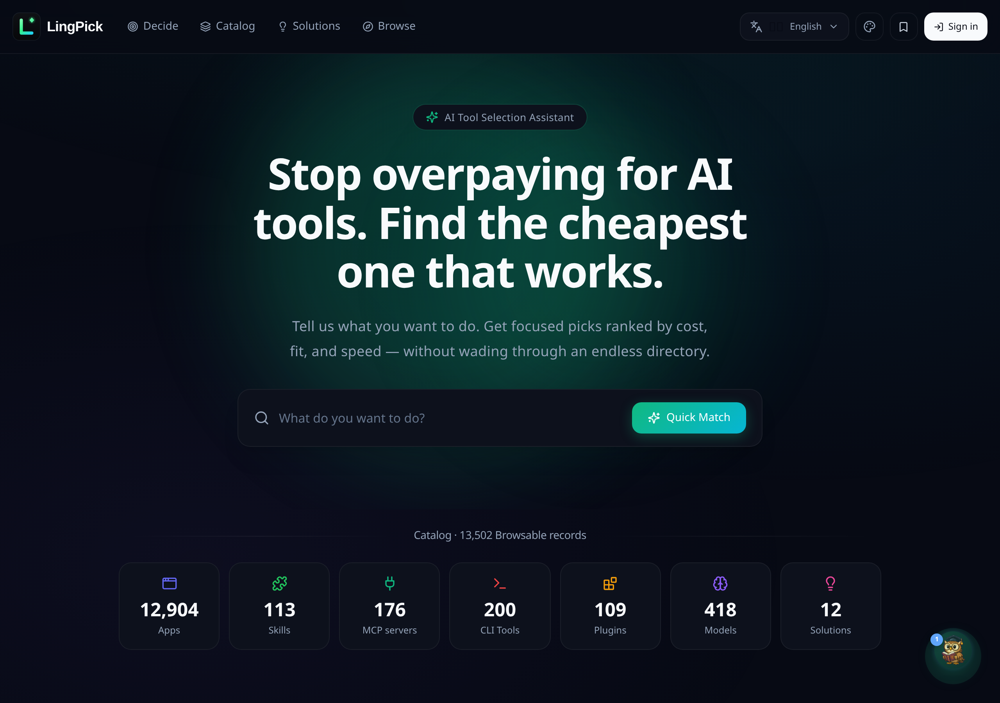
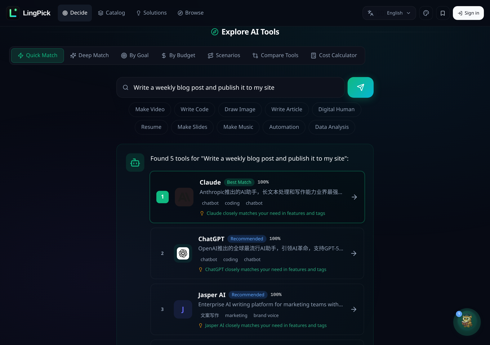

语义搜索
支持中文、英文、日文等多语言。一万四千个工具，按「意思」而非关键词匹配。
别再在无穷的导航站里大海捞针。告诉 LingPick 你想做什么——它检索 14,000+ 工具与 400+ 模型，按成本、契合度与速度，给你三个排名推荐。
不是样机。以下都是真实产品的实拍截图。


截图取自 madapexai.com —— 无需注册，立即试用。
LingPick 把你的朴素描述，变成一份可以直接行动的小清单——大约三十秒。
用任何语言写一句话——「做个科普视频」或「帮我写周报」。
语义检索 14,000+ 工具，并按成本、契合度、速度智能排序。
带匹配度评分、价格档位与直达链接的排名结果。
为「想做事、不想逛目录」的人而生。
支持中文、英文、日文等多语言。一万四千个工具，按「意思」而非关键词匹配。
一个搜索框，三个排名推荐。没有表单、没有筛选、没有摩擦。
应用、技能、MCP 服务、CLI 工具、插件、模型、解决方案——全部归类、随手可览。
并排对比 400+ 模型：GPT-4o、Claude、Gemini、Llama、DeepSeek——附实时价格。
精选自 Reddit、知乎、Hacker News 的搭建方案——附每一套栈的成本拆解。
用自然语言推荐工具的 AI 助手。在 25+ 关键词上可被触发。
同一个任务，两种天差地别的体验。
| 你输入 | LingPick 找到 |
|---|---|
| "make video" | Video Podcast Maker、Hailuo AI Video、CogVideoX |
| "写代码" | SkyCode、CodeFly、Kimi K3 for Coding |
| "做PPT" | Dashi PPT、McKinsey PPT Design |
| "AI绘画" | AI Painter、Miaohui AI、Huiwa AI |
| "data analysis" | Research Data Analysis 系列工具 |
| "coding assistant" | cli-llm-coding、Live Coding in Forth |
LingBot 在以下关键词上触发：
helpsupportcontactcustomer service反馈帮助售后complaint技术支持加入那些用几秒而非数小时找到合适 AI 工具的人。